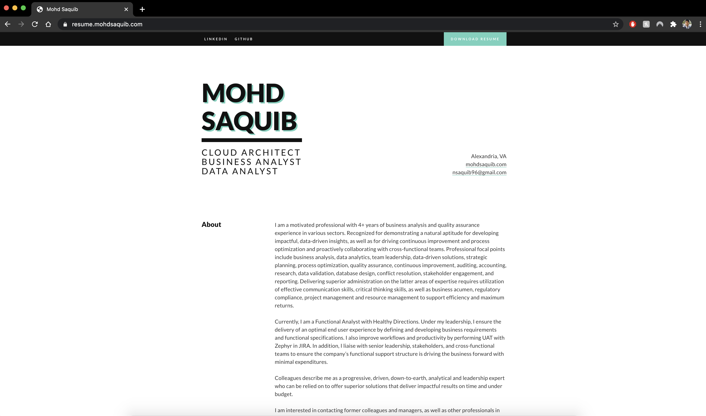
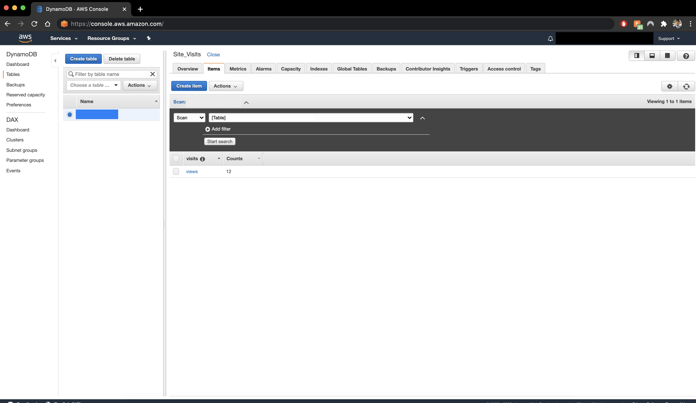
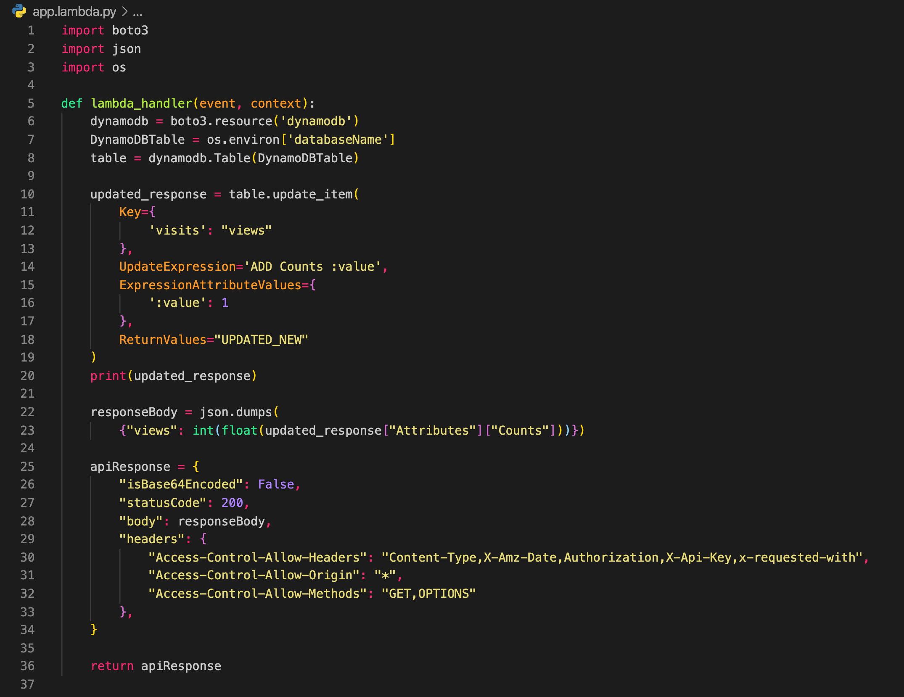
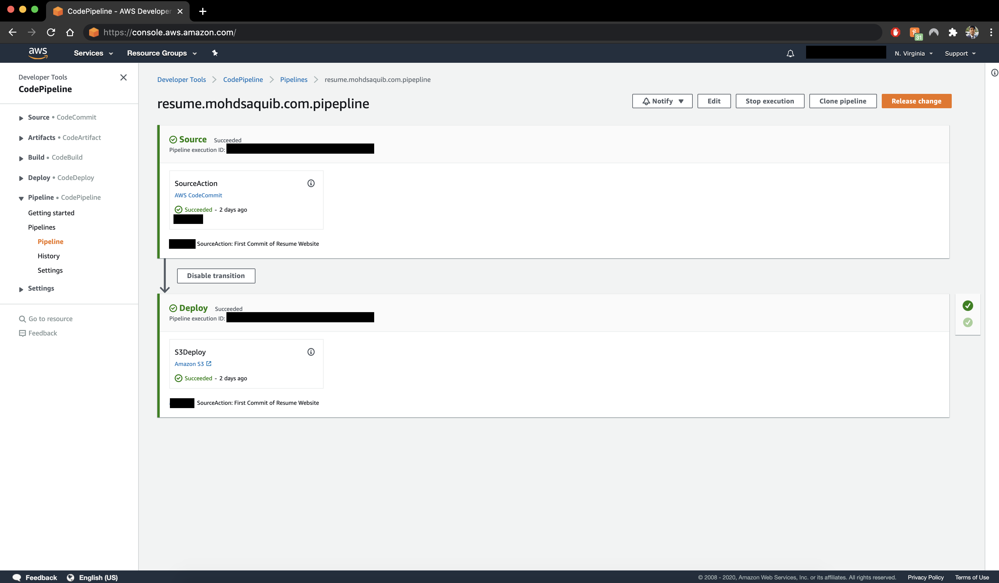

Serverless Resume Website Using Cloudformation Project

Project Website: resume.mohdsaquib.com
GitHub Repository: Resume CloudFormation Project
👋 Hello,
This is my first post and one of my first cloud projects, and I would like to share my experience. It has been quite a lot of fun learning for the last few weeks, and I am excited to share it.
After attaining the AWS certificate during the COVID-19 pandemic, I decided to advance further into other AWS certificates. Meanwhile, I also wanted to showcase what I learned during this process. I knew the certificate alone was not going to land me a job as a Cloud Engineer. Hence, I had to do something and prove that yes, I can apply whatever I learned, in real-life scenarios. Also, I have to be continuously learning. By that, I mean getting hands-on experience so I can retain the knowledge.
The goal of this project was to make a dynamic resume that would be serverless and would keep track of the number of users visiting the website. This website should also incorporate the following AWS services:
- S3
- Lambda Functions
- DynamoDB
- API Gateway
- CloudFormation
To begin this project, I first tried to visualize the design, so I created my first simple architecture mockup on how the end product would be like.
- Front End:
The first part of the challenge was to make a static website using HTML, CSS, and JavaScript. I did not want to spend too much time designing the website as this was a cloud challenge, so I went over to codepen.io and found a simple resume template. I later changed several sections and tweaked it to my liking, and added some JavaScript code to work with my API to display site visitors' count. This was the easiest part of the project.

- Website Hosting:
The first step of the project was to upload my front-end code to an S3 Bucket and then apply proper S3 Bucket Policies so the site's content cannot be accessed from anywhere else. I also had to do some management work on the S3 Bucket to keep track of all the logs and enabled versioning. Finally, enabled website hosting feature available in S3, which turned my S3 Bucket into a web server.
I was eager to show off my website to the public; however, the website displayed a randomly generated S3 website link. I wanted it to say my domain name instead. So, I purchased a domain name on Route53 and routed my S3 website link to my domain. This removed that random S3 URL and displayed my domain name instead. It was all coming together; however, the browser was showing my website as an "unsecured" website.
I was not too fond of that, and I did not want my friends or colleagues to think my website was not secure or were prone to viruses. So, I went ahead and got a certificate in AWS ACM. I also did not want the contents of my website "Publicly Accessible". To fix this, I deployed my website using CloudFront, which is a fast content delivery network that securely delivers apps with low latency using its Edge Locations worldwide. Plus, it also provides AWS Shield protections for free against cyber-attacks. So why not? I went ahead and deployed my CloudFront distribution and routed it back to Route53 so it can be reaccessed through my domain. I implemented CloudFront Origin Access Identity, which allows S3 content to be only visible by CloudFront. In other words, my S3 content can only be accessed from CloudFront. At this stage, I was relieved to see as my browser was now showing the "Secure" lock sign next to my domain name.
- Back End:
One of the main puzzles of this project was to implement a website visitor Counter. It was not as easy it seems to be as my main goal was to make it as serverless as possible. To tackle this challenge, I first learned how a DynamoDB NoSQL database works and how to design my database to store the counter. This was a straightforward part of the process. However, after looking at a few plans, I settled on the most straightforward implementation, which included having one item and an attribute, and all it would do is update the counter.

The second step of this process was somehow to update my DynamoDB. I did not want to deploy an EC2 instance just to update the counter, which did not make any sense as I was going for a serverless architecture. The best way to handle this was by deploying a Lambda function, which would be triggered by an API gateway. It took me quite a while to work on my Lambda function as it was way more complicated than I thought it would be. I had to use AWS-SDK to make the function work with my DynamoDB table. It was still not quite working as I intended, so I worked on them one step at a time, and they were as follows:
- First, I deployed a simple Lambda function that would update my DynamoDB. This was simple and worked as expected.
- While working on my code, I updated my DynamoDB table's design quite a few times and then finally settled on the best and simple one.
- At this point, my Lambda Function was working with my DynamoDB by manual invocations. And now comes the hard part, it was to make an API trigger my lambda function and get back the response back to the API to display the content. I kept getting errors, and my Lambda function was just not returning any values back to my API. After countless tries and failures, and research, it turned out that I needed to produce my output in JSON format and had to pass in CORS in my function!
- And at last, it finally was working as intended, and the site visitor counter was working correctly.

- Source Control:
At this point, I was content with my project. However, there was a problem. Every time I wanted to push new changed to my website, I had to go to the S3 Bucket and manually upload the latest changes. This was such a tedious workflow and not efficient. I wanted to implement something where I could push code directly to my S3. It turns out there is a way! AWS CI/CD tools are an excellent service to handle this process. I could have done it with GitHub, but I wanted this entire project to be on AWS only. I implemented AWS Code Commit to store my code. And deployed AWS Code Deploy, which would use the artifacts in my repository from AWS Code Commit and push it to my S3 Bucket. However, this was not efficient enough as I still had to run these manually every time I had any updates. So, I added AWS Code Pipeline to take care of this automatically. After this, every time I made an update and pushed my code to the repository, after 10 seconds, my AWS Code Pipeline would be triggered and push all the artifacts from my AWS Code Commit Repository to my S3 Bucket.

-
CloudFormation:
While I was working on my project, I discovered the power of Infrastructure as Code! I wanted to do the same with my project. I was fascinated by how it was so simple to create resources without even touching the AWS UI. So, I decided to take on this challenge and started learning it. CloudFormation is a great service offered by AWS, allowing developers to model and provision AWS and third-party resources using simple JSON and YAML. I decided to use YAML and spent about a week learning the basics of YAML and all the AWS intrinsic functions such as !Ref, !Sub, !Join, !GetAtt, and more. CloudFormation seems easy, but it's not, why do I say that? Because it's such a tedious work to keep on referring back to their Documentation. I had to incorporate several CloudFormation Keys and Values, such as Resources, Outputs, Parameters, Mappings, Metadata, in my project. I spent about a week writing my entire Infrastructure in YAML. The coolest thing about this was that my entire Infrastructure could be provisioned within 10 mins. Yes, that includes Deploying S3 buckets, working Lambda Function, DynamoDB, and creating certificates and rerouting them back to Route53. The hardest part of this step was creating the API in CloudFormation. It took me nearly two days to figure out how to implement my API in CloudFormation as there are several parts of an API which in the UI you don't see.
At this stage, my Back End was complete and ready to go! However, this was not the end! There is more, I wanted to make it better and make it more efficient.
Working on this project was fun. I think I have a whole new appreciation for CloudFormation
and will be working on other projects that will be developed using CloudFormation. My next
goal is to develop more serverless apps and create a simple multi-tier application just for
fun. I will build it entirely in CloudFormation!
Programming Languages :
Tech Stack :